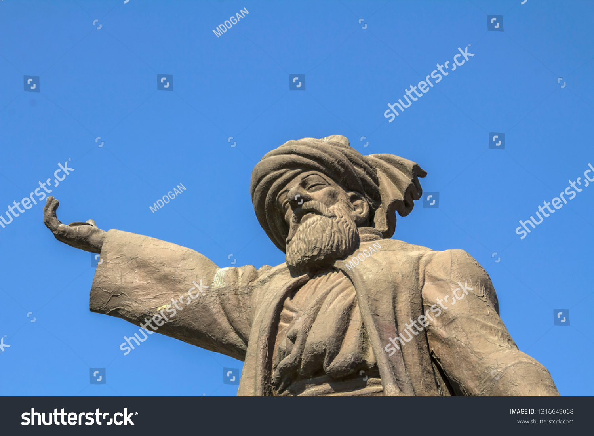

JALALUNDIN RUMI
(30 September 1207 – 17 December 1273)
one who knew nothing but love
Rūmī was a great Sufi mystic and poet in the Persian language, famous for his lyrics and for his didactic epic Mas̄navī-yi Maʿnavī (“Spiritual Couplets”), which widely influenced mystical thought and literature throughout the world.
What is Rūmī’s philosophy?
According to Rūmī’s philosophy, life should be a journey to union with the one true God, which is achieved by practicing love—by disregarding oneself as an independent being and turning toward the truth of God’s oneness. Aided by spiritual guides, one lives—loves—into that truth, gradually ascending to full knowledge of the one divine presence, then guiding others.What did Rūmī write about?
Rūmī’s experience of love, longing, and loss made him turn to poetry. He wrote mystical love songs to his mystic teacher Shams al-Dīn, the Prophet Muhammad, and God; ghazals (short lyric poems, each cohering by a unity of subject and symbolism rather than by a logical sequence of ideas); and many robāʿīyyāt (quatrains with the rhyme scheme aaba).His legacy
- His poetry influenced not only Persian literature, but also the literary traditions of the Ottoman Turkish, Chagatai, Pashto, Kurdish, Urdu, and Bengali languages.
- Rumi's works are widely read today in their original language across Greater Iran and the Persian-speaking world.
- Rumi has been described as the "most popular poet"
- Rumi lived most of his life under the Persianate[40][41][42] Seljuk Sultanate of Rum, where he produced his works[43] and died in 1273 AD.
- his shrine became a place of pilgrimage.
- Upon his death, his followers founded the Order of the Whirling Dervishes, famous for the Sufi dance known as the Sama ceremony.
- the beautiful rumi ghazal